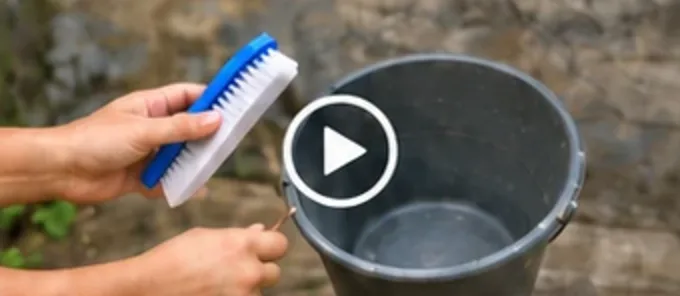
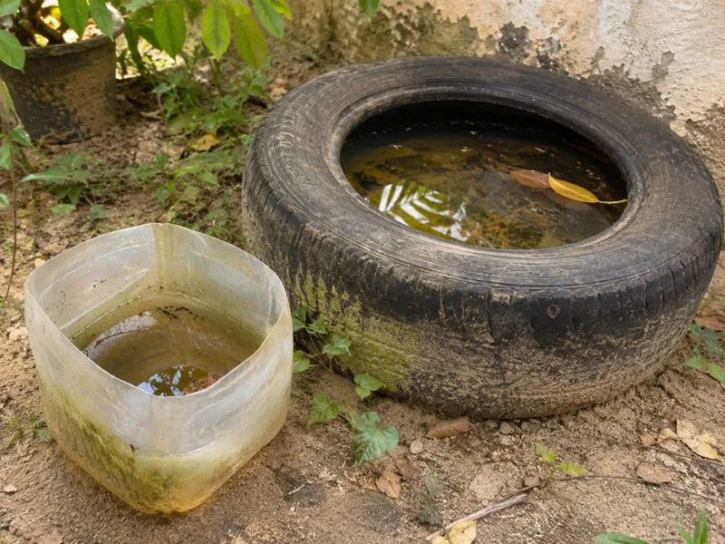
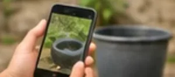

Identificar possíveis focos
Observe locais que acumulam água.

O que observar
-

Observe recipientes expostos à chuva.
-

Procure pontos de água acumulada.
-

Registre quando precisar de ajuda.
Dúvidas frequentes
Observe vasos, baldes, pneus, garrafas e outros locais que possam reter água.
Sim. Não descarte um local só porque a água parece limpa.
Não. Informe a suspeita; a confirmação cabe à equipe responsável.
Mostre o recipiente e seu entorno, sem expor pessoas ou dados particulares.
Não entre nem se coloque em risco. Informe a localização e a dificuldade de acesso.
Quando houver suspeita e você precisar de apoio para avaliar ou resolver a situação.